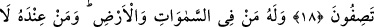
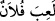
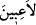

GÖĞÜ YERİ VE İÇİNDEKİLERİ
EĞLENCE OLSUN DİYE YARATMADIK
16. Biz, göğü, yeri ve bunlar arasında bulunanları, eğlence için yaratmadık.
17. Eğer bir eğlence edinmek isteseydik, onu kendi tarafımızdan edinirdik. (Bu
irâdemizin eseri olurdu. Ama) biz (bunu) yapanlardan değiliz.
18. Bilakis biz, hakkı bâtılın tepesine bindiririz de o, bâtılın işini bitirir. Bir de
bakarsınız ki, bâtıl yok olup gitmiştir. (Allâh’a) yakıştırdığınız sıfatlardan dolayı
yazıklar olsun size!
19. Göklerde ve yerde kimler varsa O’na âiddir. O’nun huzûrunda bulunanlar,
O’na ibadet hususunda kibirlenmezler ve yorulmazlar.
20. Onlar, bıkıp usanmaksızın gece gündüz (Allâh’ı) tesbih ederler.
“Biz” çatılmış bir kubbe ve kurulmuş bir çadır gibi olan “göğü,” döşek ve sergi gibi
olan “yeri ve bunlar arasında bulunanları,” türlü türlü mahlûkâtı ve şaşılacak sınıf
sınıf varlıkları “eğlence için yaratmadık.”
“el-Halk”, esâsen bir şeyi dosdoğru takdir etmek demektir. Aslı benzeri olmadan bir
şeyi yaratmayı ifâde eder.
Bir kimse düzgün bir amacı olmadan bir iş yaptığı zaman ona:
“__WORD__ denir. Şu halde âyetteki “__WORD__ (eğlence için)” lafzı, abes olarak yaratmadık,
bilakis bir takım hikmetler ve maslahatlar için yarattık. Bu ise gök, yer ve ikisi arasında
olanların insanın yaratılışının kaynağı/temeli, geçiminin sebebi ve asıl gâye olan Allâh’ı
ma‘rifeti tahsîle götüren birer delil olmalarıdır.
Akıllılar nazarında yeşil ağaçların yaprağı
Hakk’ın marifetinin bir defteridir
Her şey Allâh’ın ya lütfunun veya kahrının mazharıdır. Her zerrede hayret verici sırlar